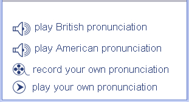

You can listen to the sound of every word in the dictionary.
When you open a dictionary entry the pronunciation of the entry word will play automatically. Use the settings menu to turn this function on or off and also to decide if you want to hear American or British pronunciations. To hear the sound again click on the Pronunciation Practice button and the pronunciation window will appear. Select the sound you want to play, spoken by an American or British speaker.
You can also record your own voice and compare it with the native speaker.

You can switch sounds on and off and display or not display pronunciation characters from the settings menu.